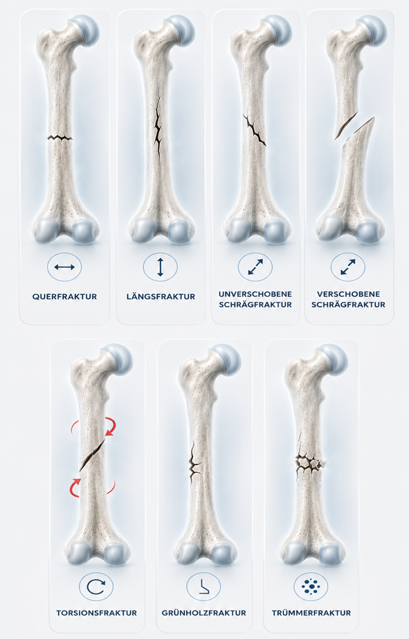
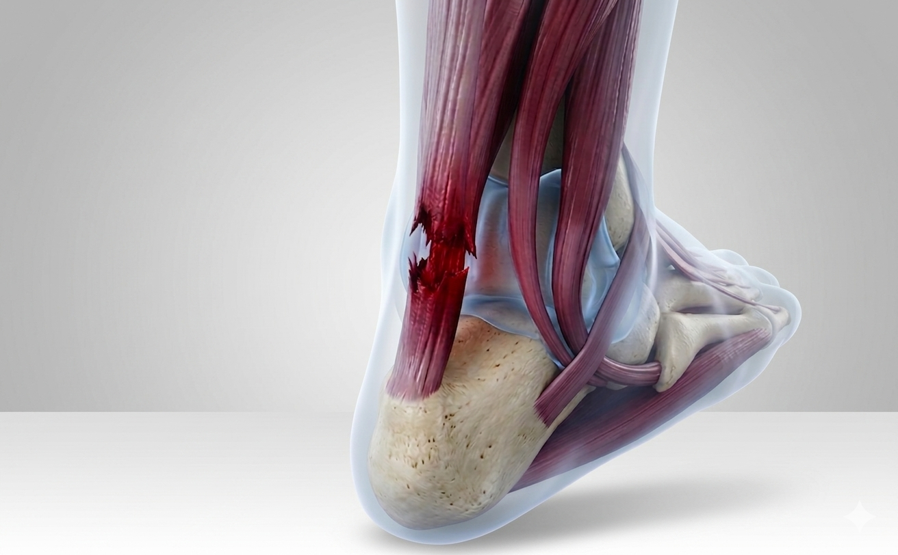

Sportverletzungen Wien
Umfassende und spezialisierte Versorgung aller Sportverletzungen – von der Akutdiagnose bis zur vollständigen Rückkehr in den Sport.
Sportverletzungen
Umfassende Versorgung für SportlerInnen
In unserer Gesellschaft ist Sport ein wichtiger Bestandteil des alltäglichen Lebens geworden. Um sich fit und gesund zu halten wird ein gewisses Maß an Sport empfohlen. Bei vielen Sportarten können natürlich Abnützungen sowie Verletzungen an verschiedenen Gelenken entstehen – am Schulter-, Ellbogen-, Hand-, Hüft-, Knie- und Sprunggelenk.
Wir stehen Ihnen bei allen Sportverletzungen sowie abnützungsbedingten Beschwerden jederzeit zur Verfügung. Von der Erstdiagnose über die Therapie bis zur vollständigen Rückkehr in den Sport begleiten wir Sie auf jedem Schritt.
Die meisten Verletzungen entstehen durch falsches Ausführen einer Sportart, schlechtes Equipment oder durch unzureichend trainierte Koordination und Muskulatur. Um dies zu verhindern, stehen Ihnen unsere Therapeuten und unser Sportwissenschaftler zur Erstellung eines individuellen Trainingsplans zur Verfügung.
Sofortmaßnahmen: Die PECH-Regel
Bei akuten Sportverletzungen entscheidet das richtige Handeln in den ersten Minuten über den weiteren Heilungsverlauf. Die international anerkannte PECH-Regel bietet eine einfache und effektive Erstversorgung – anwendbar bei Zerrungen, Verstauchungen, Bänderrissen und Prellungen.
- P – Pause: Belastung sofort stoppen. Weiterspielen oder -trainieren verstärkt die Verletzung und verlängert die Heilungszeit erheblich.
- E – Eis (Kühlung): Kühlen Sie die betroffene Stelle 15–20 Minuten mit Eis oder einer Kältekompresse – nie direkt auf die Haut, immer mit Tuch dazwischen. Kühlung reduziert Schwellung, Schmerz und Blutung ins Gewebe.
- C – Compression: Ein elastischer Druckverband begrenzt die Schwellung und stabilisiert das verletzte Gelenk. Nicht zu fest anlegen – Finger oder Zehen sollten noch gut durchblutet sein.
- H – Hochlagern: Das betroffene Körperteil hochlagern, um den venösen Rückstrom zu fördern und die Schwellung zu minimieren. Ideal: Lagerung über Herzniveau.
Nach Erstversorgung gemäß PECH-Regel sollte bei anhaltenden Schmerzen, deutlicher Schwellung oder Instabilität umgehend ein Facharzt aufgesucht werden. OA Dr. El Marto bietet schnelle Diagnostik und individuelle Therapieplanung – vom Sportler für Sportler.
Beratungstermin buchen →
Knochenbruch
Knochenfraktur & operative Versorgung
Im Rahmen von Stürzen und Sportverletzungen kann es zu Knochenbrüchen (Frakturen) kommen. Mittels Röntgen und – wenn notwendig – einer CT-Untersuchung kann die Fraktur beurteilt und eine Therapieempfehlung abgegeben werden.
Viele Frakturen können konservativ durch Ruhigstellung therapiert werden. Bei bestimmten Indikationen muss eine operative Stabilisierung erfolgen – minimalinvasiv und mit modernsten Implantaten.
Immer häufiger entdeckt man bei PatientInnen mit langer Schmerzanamnese Knochenbrüche in der MRT-Untersuchung, welche rückblickend auf dem Röntgen nicht sichtbar waren. Durch den besseren Zugang zum MRT können so viele unauffällig wirkende Röntgenbefunde weiter abgeklärt werden.
„Durch die tägliche Arbeit mit akuten Verletzungen sowie Schwerverletzten im Unfallkrankenhaus entsteht eine hohe Expertise bei der Versorgung von Frakturen – und damit für Sie als Patient die Gewissheit, optimal versorgt zu werden."Beratungstermin buchen →

Bandverletzungen
Bänderriss & Bandruptur
Im ganzen Körper stabilisieren Bänder unseren Bewegungsapparat. Besonders häufig trifft ein Bänderriss das Sprunggelenk – meistens durch abruptes Umknicken beim Sport oder im Alltag. Wenn solche Bänder ein-, ab- oder ausreißen, besteht die akute Gefahr eines instabilen Gelenks, was langfristig zu chronischen Schmerzen und Spätfolgen führen kann.
Instabile Gelenke nützen sich frühzeitig ab (Arthrose) und stellen für den Patienten bei bestimmten Aktivitäten ein Sicherheitsrisiko dar. Daher muss jeder Bänderriss am Sprunggelenk oder anderen Gelenken ernst genommen und adäquat individuell therapiert werden.
Ob eine Bandruptur operativ oder konservativ behandelt werden muss, wird individuell je nach klinischem und bildgebendem Befund entschieden. Die Kombination aus modernster Bildgebung (wie dem MRT) und klinischer Expertise ermöglicht eine präzise, maßgeschneiderte Therapiewahl.
„Ob eine Bandverletzung operativ oder konservativ behandelt werden muss, wird individuell je nach klinischem und bildgebendem Befund entschieden."Beratungstermin buchen →

Sehnenverletzungen
Sehnenriss & chronische Sehnenprobleme
Sehnen übertragen die Muskelkraft auf Knochen und ermöglichen so Bewegungen in den Gelenken. Verletzungen von Sehnen sind daher oft mit einer Bewegungseinschränkung verbunden. Sehnen können bei großer Gewalt reißen oder durch Einwirkung von außen durchtrennt werden.
Am häufigsten sind Sehnen rund um das Schultergelenk betroffen. Aber auch die Achillessehne, Bizepssehne und Kniescheibensehne können bei Sportlern reißen. Chronische Entzündungen können zu Sehnenverletzungen bzw. Veränderungen der Sehnenstruktur führen.
Akute Sehnenverletzungen sind zumeist operativ zu therapieren, wobei immer das Alter des Patienten sowie die klinische Symptomatik entscheidend ist. Chronische Sehnenprobleme hingegen sind eine Domäne der konservativen Therapie – insbesondere der Stoßwellentherapie (ESWT) und der ACP-Eigenbluttherapie.
„Akute Sehnenverletzungen sind zumeist operativ zu therapieren. Chronische Entzündungen an Sehnen jedoch sind eine Domäne der konservativen Therapie."Beratungstermin buchen →
Sportverletzung? Wir sind 24/7 für Sie da.
Rufen Sie uns an oder buchen Sie online einen Termin – auch in Notfällen.
Termin Buchen →